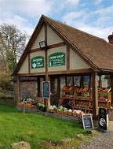

Shop for farm-fresh goods
Visit The Farm Shop for a wide selection of farm-fresh goods, handmade crafts, and seasonal decorations. From fresh produce and homemade jams to unique gifts and souvenirs, The Farm Shop has something for everyone.
Our shop is stocked with items made right here on Sunny Acres, ensuring the highest quality and supporting local artisans. Don't miss out on our seasonal specials and holiday-themed items that make perfect gifts.
The Farm Shop is open daily, and our friendly staff are always ready to help you find the perfect item or answer any questions you might have.